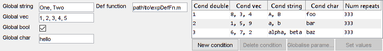

Experiment definition inputs
This guide goes through all of the inputs to an expDef function and provides a few examples of how to work with the. Below is the function signature of an expDef:
function expDefFn(t, events, parameters, vs, inputs, outputs, audio)
Contents
Time
The first input is a clock signal whose value is the number of seconds from the start of the experiment. It updates its value on every iteration of the main experiment loop. The value of t is always positive. It is the first signal in an experiment to update. If there is an experiment pre-delay, the time signal will still update before the expStart event signal and therefore any signals that depend only on the time signal will also update early (remember signals update when their inputs update so long as their inputs have a value).
Events
The second input to your expDef is the events signal. The events signal is subscriptable, much like a struct, and contains signals related to the experiment trial structure. All signals that are part of the events signal have their values logged, tampstamped and saved at the end of the experiment. You can assign any number of signals to the events signal to record their values in the block file.
For more info on the block file, see the block files guide. You can inspect the block file data when debugging an expDef in the test GUI (see this guide).
Special events
Below are a list of preset event signals that you can use in your expDef.
expStart
This updates once and only once at the start of the experiment. Its value is the expRef (a char). Thus if you want to use it to trigger something, map it to a constant first:
started = events.expStart.map(true); w0 = inputs.wheel.at(started);
newTrial
This updates to true each time there is a new trial (i.e. after endTrial updates. Each time newTrial updates, the parameters update too. Most of the time in MATLAB values are quietly typecast for you. For instance true + true == 2. Signals are no different. Sometimes functions complain so be sure to typecast if you're using it as a number:
side = events.newTrial.map(@(k) randsample([-1 1], int32(k))); % Conveted to an int
trialNum
This updates at the start of each new trial (i.e. after endTrial updates) and its value is the current trial number (double). Behind the scenes, trialNum is really just this:
events.trialNum = events.newTrial.scan(@plus, 0);
endTrial
The endTrial event is the only signal that must be defined in your expDef. Each time endTrial updates, the trial ends and parameters, newTrial, trialNum and repeatNum all update. There is no significant delay between endTrial and newTrial, so any 'inter-trial' delays must actually occur before or after and endTrial and newTrial.
Below is the absolute minimum required for an expDef:
function expDefFn(t, events, varargin) % End each trial after 5 seconds events.endTrial = events.newTrial.delay(5); end
The value of the endTrial can be anything, however the Signals Experiment Framework checks the value and determines whether to repeat the trial conditional parameters. If the value of endTrial == true (i.e. is a non-zero value) then the trial conditions are repeated the following trial.
The way you define endTrial allows you to finely control the trial structure. Here are some examples:
- Fully randomized trial parameters
- Hard anti-biasing where trial parameters are repeated until the correct response is given
- Soft anti-biasing where the liklihood of repeating a parameter depends on performance
- Trial conditions occur in a given order and all conditions repeated some number of times
- Trial conditions randomized but repeated sequentially a given number of times
In the following example we define a passive experiment where the orientation varies across trials. Each orientation is shown twice in a row:
function driftingGrating(t, evts, pars, stimuli, varargin) % DRIFTINGGRATING A drifting grating with a different orientation per trial % Displays a 3Hz drifting grating at a given orientation. The % orientation is repeated some number of times in a row and the order in % which the orientations are shown is randomized.
% Define the visual stimulus grating = vis.grating(t); % we want a gabor grating patch grating.phase = 2*pi*t*3; % with its phase cycling at 3Hz % stimOff occurs some user defined seconds after new trial starts stimOff = evts.newTrial.delay(pars.stimDuration); % stimulus visible between trial onset & stimOff grating.orientation = pars.orientation; grating.show = evts.newTrial.to(stimOff);
% Trial logic % Move on to next orientation after the sequential repeats nextCondition = evts.repeatNum == pars.sequentialRepeats; % next trial should start 1s after stimOff evts.endTrial = stimOff.delay(1).then(nextCondition);
% Add stimulus to renderer
stimuli.grating = grating;
try pars.stimDuration = 5; % seconds nOrientations = 3; % Number of trial conditions pars.orientation = linspace(0, 270, nOrientations); % Orientations to use pars.sequentialRepeats = 2; % Show each orientation twice in a row catch end
For detailed examples see the Parameters guide.
repeatNum
The repeatNum event simply counts the number of times in a row the endTrial event signal was 0 or false. When endTrial updates to a non-zero value, repeatNum resets to 1. repeatNum updates at the same times as newTrial and trialNum.
expStop
When the expStop signal updates, the experiment ends. This can be used to trigger cleanup routines or to define when the experiment ends based on experiment parameters. Experiments will end automatically if all trial conditions have occured (defined by the numRepeats parameter), if the quit key is pressed on the stimulus computer, or if the 'End' or 'Abort' button is pressed in mc.
Example 1 - Referencing expStop
% Open a text file at the beginning of an experiment fid = events.expStart.map(@(~) fopen('expData.txt', 'r')); % On each new trial read the next line from the file tline = events.newTrial.then(fid).map(@fgetl); % When the experiment stops, close the file events.expStop.then(fid).map(@fclose);
NB: When the post-delay is set to zero the cleanup routine executes immediately after expStop updates so at some point the updates in the network will be interrupted. If you trigger a slow function with expStop then ensure there is a reasonable post-delay to ensure the network has time to finish propagation.
Example 2 - Assigning to expStop
% End the experiment after a set amount of time expLength = p.expLengthMin * 60; % convert to seconds events.expStop = events.expStart.map(true).delay(expLength);
NB: The expStop event can have any value and is of course saved, thus you can use it to note how the experiment ended, further, any value will trigger the experiment to end, so make sure it only updates once, at the intended time.
Example 3 - End experiment based on performance and reaction time
% Response time = duration (seconds) between new trial and response rt = t.at(stimOn).map2(t, @(a,b)diff([a,b])).at(response); % The median response time over the last 20 trials windowedRT = rt.buffer(20).map(@median); % The median response time over all trials baselineRT = rt.bufferUpTo(1000).map(@median); % tooSlow is true when windowed rt is x times longer than median rt for the % session, where x is the rtCriterion tooSlow = windowedRT > baselineRT * p.rtCriterion; % A rolloing buffer of performance (proportion of last 20 trials that were % correct) - this includes repeat on incorrect trials windowedPerf = hit.buffer(20); windowedPerf = sum(windowedPerf) / numel(windowedPerf); % Proportion of all trials that were correct baselinePerf = hit.bufferUpTo(1000).map(@(a)sum(a)/length(a)); % True when there is an x% decrease in performance over the last 20 trials % compared to the session average, where x is pctPerfDecrease performanceChange = (baselinePerf - windowedPerf) / baselinePerf; poorPerformance = performanceChange > p.pctPerfDecrease / 100; % The subject is identified as disengaged from the task when the subject is % either too slow or exhibits a significant drop in performance. maxLength = events.expStart.map(1).delay(45*60); % Session length: 45 min finished = indexOfFirst(tooSlow, performanceChange, maxLength); % The session is finished when either the session has been running for 45 % min, or when the subject is disengaged. The 'finish' signal only updates % when one of the three inputs updates to true. endReason = finished.selectFrom('long rt', 'poor performance', 'max session length'); events.expStop = endReason;
Logging your own events
You can assign any number of your own signal to the events structure if you want their values and timestamps saved. Events are always horizontally concatenated, so if you have a row vector and want to store its history, transpose it when assigning to the events registry and you'll get a matrix out:
events = sig.Registry(); % Similar to the events input
S = string(strsplit(which('addRigboxPaths'), filesep)); % A string array
events.str = sig.test.sequence(S, 0.2); % str updates with a new string every 200ms
events.char = events.str.map(@char); % char takes values of str but as a char
vec = events.str.map(@(~) rand(1,3)); % vec updates with a 1x3 array each time str updates
events.mat = vec.'; % Transpose vector when saving to build up matrixdata = logs(events) % the events structure as seen in a block file
data =
struct with fields:
strValues: ["C:" "Users" "User" "Documents" "Github" "rigbox" "addRigboxPaths.m"]
strTimes: [1.6519e+06 1.6519e+06 1.6519e+06 1.6519e+06 1.6519e+06 1.6519e+06 1.6519e+06]
charValues: 'C:UsersUserDocumentsGithubrigboxaddRigboxPaths.m'
charTimes: [1.6519e+06 1.6519e+06 1.6519e+06 1.6519e+06 1.6519e+06 1.6519e+06 1.6519e+06]
matValues: [3×7 double]
matTimes: [1.6519e+06 1.6519e+06 1.6519e+06 1.6519e+06 1.6519e+06]Parameter defaults
You can define defaults for your parameters at the end of your expDef by assigning values to the parameters referenced in the experiment.
Defining parameter defaults is useful because changing parameter type is not possible in the ParamEditor. Without defining defaults all parameters are empty doubles.
Parameters can be either 'global', i.e. have the same value each trial, or 'conditional', meaning their values can change each trial. For more information about Experiment Parameters, see the Parameters guide.
Trial conditional parameters have more than one column, where each column is a condition may be drawn on any given trial. All trial condition parameters must have the same number of columns. Parameters can be converted between global and conditional later on in the Parameter Editor. The only exception to this rule is for parameters that are chars. These are considered a single element. To make them trial conditions, use a cellstr or string instead.
Below is an example of some parameter defaults and how they appear in the Parameter Editor:
function expDefFn(t, events, p, varargin)
...
try %%% % Global parameters (Number of colmns == 1) %%% p.globalString = ["One"; "Two"]; p.globalVec = (1:5)'; % Transposed to column vector p.globalBool = true; p.globalChar = 'hello'; %%% % Trial condition parameters %%% p.condDouble = 1:3; p.condVec = magic(3); % parameter will be a [1x3] array p.condString = [["A"; "B"], ["a"; "b"], ["alpha"; "beta"]]; p.condChar = {'foo', 'bar', 'baz'}; catch end

Note that the cellstr is a special exception where the parameter signal will update with a char, not cell. It's also important to note that although vector parameters are [Nx1], the parameter signal will take the value of [1xN] (a row vector). You can transpose the parameters in your expDef:
function expDefFn(t, events, p, varargin) colVec = p.vec.'; ...
numRepeats is a special parameter that does not need defining in your expDef. By default there are 1000 trials in total. You can change the number in the Parameter Editor.
Visual stimuli
The fourth input is a special object for dispatching visual stimuli to the renderer. Visual stimuli are defined in the expDef and when assigned to the visual stimulus object, their textures are preloaded. For details and examples of creating stimuli, see the visual stimuli guide.
Inputs
The inputs signal is a subscriptable signal containing all configured input devices. Currently there are only three possible input devices:
- inputs.wheel - the rotary encoder device. This can actually be any DAQ device, whatever is set as the 'mouseInput' field of the rig object (see hardware config guide). The values of 'wheel' are in samples, and the device is zeroed during experiment initialization. This input updates on every iteration of the main experiment loop, even if the wheel is not moving.
- inputs.lickDetector - values logged via the device in the rig's 'lickDetector' field. This input updates on every iteration of the main experiment loop.
- inputs.keyboard - updates each time a keyboard key is pressed. Note that the keyboard input's value can be more than one charecter, particularly if two keys are pressed at once. This input only updates when a key is pressed.
There are two other signals that are derived from 'wheel'.
- inputs.wheelMM - the values of wheel but in mm linear displacement units.
- inputs.wheelDeg - the values of wheel but in degrees. Note the values do not wrap around at 360.
The values of these signals depend on the 'EncoderResolution' and 'WheelDiameter' properties of the mouseInput device. For details on the wheel units, see the wheel analysis guide. Unlike the raw wheel input, these two signals only update when their values change (i.e. when the wheel is moved).
Much like the time signal, the input signals can update before the expStart and newTrial events, particularly is there is an experiment pre-delay. Any dependent signal may therefore also update before expStart. You can ignore all samples before expStart with the following line:
function expDefFn(t, events, parameters, vs, inputs, outputs, audio) inputs = inputs.keepWhen(events.expStart.map(true)); ...
As mentioned the wheel input will constantly update, regardless of whether the wheel is moving. The skipRepeats method will return a signal that only updates when the value changes:
wheel = inputs.wheel.skipRepeats;
The inputs are all saved in the hardware file in the same format as the events stucture.
Outputs
The name of each signal in the outputs of your experiment definition file should match the channel names set in your hardware file (see the hardware config guide), thus if in my rig hardware file daqController.ChannelNames = {'rewardValve', 'TTL', 'motor'} then my signals experiment deifinition file may look something like this:
function rwdWorld(t, evts, p, vs, in, out, ~) rewardOn = evts.newTrial.delay(2); % trigger reward 2 seconds after trial start laserStart = rewardStart.delay(1); % trigger laser 1 second after the reward
reward = p.rewardSize.at(rewardOn); % reward size to output TTL = p.pulseSize.at(laserStart); % laser pulse size to output
out.reward = reward; % output to the rewardValve channel out.TTL = TTL; % output signal to 'TTL' channel ...
NB: out.reward is a special case and will output to the 'rewardValve' channel. This should always be the first channel in the list.
Audio
The final input to the expDef is an audio object. As with the outputs object, the audio object can be assigned samples for sending to the audio driver. The fieldname used to assign the samples corresponds to which audio device to send the samples to. Assigning to the 'default' field will cause the samples to be played through the system's default device (unless this is changed in the rig's hardware file).
The audio devices can be queried in the following manner, where 'default' is the name of the device. A struct of audio device information is returned. For a list of fields, see PsychPortAudio('GetDevices').
audioDevice = audio.Devices('default');
nChannels = audioDevice.NrOutputChannels;
sampleRate = audioDevice.DefaultSampleRate;
These channels and sample rate can be used to generate the correct samples. The below example shows how to create a sine wave tone at a particular frequency. The function aud.pureTone returns samples given a set of parameters.
frequency = 15000; % Hz duration = 1; % seconds rampDuration = 0.02; % seconds samples = aud.pureTone(... frequency, duration, sampleRate, rampDuration, nChannels);
The samples can be send to the audio driver at a given time using signals
% At the time of 'newTrial', send samples to audio device
audio.default = events.newTrial.map(samples);
The samples can be generated on the fly using mapn. In this example, each time the the tone amplitude and frequency parameters update, the samples are recalculated
toneSamples = mapn(... p.toneFrequency, ... % frequency 0.1, sampleRate,... % duration and sample rate 0.02, nChannels, ... % ramp and number of channels @aud.pureTone); audio.default = events.newTrial.then(p.toneAmplitude * samples);
The below code will produce a list of available device names that can be referenced during the experiment:
rig = hw.devices;
availiable_devs = {rig.audioDevices.DeviceName}'
Summary
- the time signal, t, always updates before all other signals.
- events.expStart updates once and only once during an experiment.
- All parameter signals update simultaneously every trial. If they are global parameters, they update with the same value each time.
- events.expStop updates once and only once at the end of the experiment. If you define it in your expDef, when it takes a value the experiment will end.
- All signals assigned to the events subscriptable signal will be logged and saved in your block file. You will not be able to recover the values or update times of signals that aren't part of the inputs, parameters or events signals.
- When events.endTrial updates, the trial ends. If its value is non-zero / true, the next trial condition is selected and events.repeatNum resets to 1. If its value is 0 / false, the exact same parameters are repeated the following trial, and events.repeatNum will increase by 1.
- The only signal that must be defined in an expDef is the events.endTrial signal.
Etc.
Author: Miles Wells
v0.0.2
Next section Creating stimuli.
See also Using Signals.
%#ok<*NOPTS>